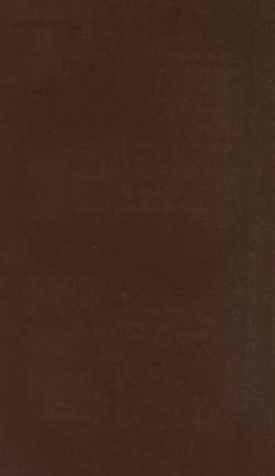
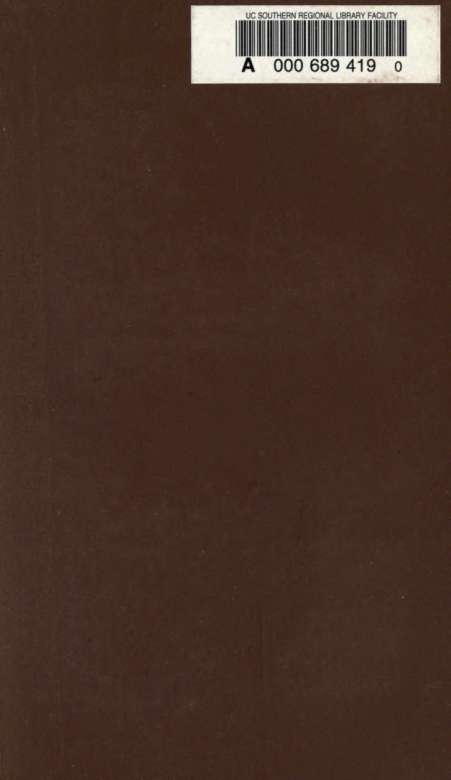

TOPHEAVY, drunk.
TOPPED, hung or executed.
TOP-SAWYER, the principal of a party, or profession. "A top-sawyer, signifies a man that is a master genius in any profession. It is a piece of Norfolk slang, and took its rise from Norfolk being a great timber county, where the top sawyers get double the wages of those beneath them."— Randall's Diary, 1820.
TOPS, dying speeches and gallows broadsides.
TOPSY-TURVY, the bottom upwards. Grose gives an ingenious etymology of this once cant term, viz., "top-side turf-ways," —turf being always laid the wi'ong side upwards.
TO-RIGHTS, excellent, very well, or good.
TORPIDS, the second-class race-boats at Oxford, answering to the Cambridge sloggers.
TOSHERS, men who steal copper from ships' bottoms in the Thames.
TOSS, a measure of sprats.
TOUCHED, slightly intoxicated.
TOUCHER, " as near as a toucher," as near as possible without actually touching.— Coaching term. The old jarveys, to show their skill, used to drive against things so close as absolutely to touch, yet without injury. This they called a toucher, or, touch and go, which was hence applied to anything which was within an ace of ruin.
TOUCHY, peevish, irritable. Johnson terms it a low word.
TOUT, to look out, or watch.— Old cant.
TOUTER, a looker out, one who watches for customers, a hotel runner.
TOWEL, to beat or whip. In Warwiclcshire an oaken slick is termed a towel —whence, perhaps, the vulgar verb.
TOWELLING, a rubbing down with an oaken towel, a beating.
TRACKS, " to make tracks," to run away.— See streak.
TRANSLATOR, a man who deals in old shoes or clothes, and refits them for cheap wear.
TRANSLATORS, second-hand boots mended and polished, and sold at a low price. Monmouth-street, Seven Dials, is a great market for translators.
TRANSMOGRIPHY, to alter or change.
TRAP, a " fast" term for a carriage of any kind. Traps, goods and chattels of any kind, but especially luggage and personal effects; in Australia, swag.
TRA.P, " up to TRAP," knowing, wide awake,—synonymous with
" up to SNUFJF."
iriik
TRAP, a sheriflPs officer.
TRAPESING, gadding or gossiping about in a slatternly way. — North.
TRAVELLER, name given by one tramp to another. "A TRAVELLER at her Majesty's expense," i.e., a transported felon, a convict.
TREE, " up a tree," in temporary difficulties,—out of the way. American expression, derived from raccoon or bear-hunting. When Bruin is treed, or is forced up a tree by the dogs, it means that then the tug of war begins.— See 'coon. Hence when an opponent is fairly run to bay, and can by no evasion get off, he is said to be treed. These expressions originated with Colonel Crockett. In Scotland the phrase is " up a close," i.e., a passage, out of the usual track, or removed from obsei-vation.
TRINE, to hdkng.—Ancient cant.
TROLLING, sauntering or idling.
TROLLY, or trollt-carts, term given by costermongers to a species of narrow cart, which can either be drawn by a donkey, or driven by hand.
TROTTER, a tailor's man who goes round for orders.— University.
TROTTER CASES, shoes.
TROTTERS, feet. Sheep's trotters, boiled sheep's feet, a favourite street delicacy.
TRUCK, to exchange or barter.
TRUCK-GUTTED, pot-bellied, corpulent.—&a.
TRUCKS, trowsers.
TRUMP, a good fellow; " a regular trump," a jolly or good natured person,—in allusion to a trump card; "trumps may turn up," i.e., fortune may yet favour me.
TUB THUMPING, preaching or speech making.
TUCK, a schoolboy's term for fruit, pastry, &c. Tuck in, or tuck out, a good meal.
TUFTS, fellow commoners, i.e., wealthy students at the University, who pay higher fees, dine with the Dons, and are distinguished by golden tufts, or tassels, in their caps.
TUFT-HUNTER, a hanger on to persons of quality or wealth. Originally University slang, but now general.
TUMBLE, to comprehend or understand. A coster was asked what he thought of Macbeth, —" the witches and the fighting was all very well, but the other moves I couldn't tumble to
exRCtly; few on us can tumble to the jaw-breakers; they licks us, they do."
TURF, horse racing, and betting thereon; " on the turf," one who occupies himself with race course business; said also of a street-walker, nymph of the pav^.
TURKEY-MERCHANTS, dealers in plundered or contraband silk. Poulterers are sometimes termed turkey merchants, ill remembrance of Home Tooke's answer to the boys at Eton, who wished in an aristocratic way to know who his father was,—a turkey merchant, replied Tooke;—his father was a poulterer. Turkey merchant, also, was formerly slang for a driver of turkeys or geese to market.
TURNED OVER, to be stopped and searched by the police.
TURNED UP, acquitted by the magistrate or judge for want of eviiience.
TURNER OUT, a coiner of bad money.
TURN OUT, personal show or appearance; a man with a showy carriage and horses is said to have a good turn out.
TURNOVER, an apprentice who finishes with a second master the iudeatures he commenced with the first.
TURM PIKE SAILORS, beggars who go about dressed as sailors.
TURN UP, a street fight; a sudden leaving, or making off.
TURN UP, to quit, change, abscond, or abandon; " Ned has TURNED UP," i.e. run away ; "I intend turning it up," i.e. leaving my present abode or altering my course of life. Also to happen; let's wait, and see what will turn up.
TUSHEROON, a crown piece, five shillings.
TUSSLE, a pull, struggle, fight, or argument. Johnson and
Webster call it a vulgar word. TUSSLE, to struggle, or argue. TWELVER, a shilling. TWIG, style, d-lamode; " get your strummel faked in TVVIQ," i.e.,
have your hair dressed in style; prime twig, in good order,
and high spirits.— Pugilistic. TWIG, " to hop the twig," to decamp, "cut one's stick," to die. TWIG, to understand, detect, or observe. TWIST, brandy and gin mixed. T WIST, appetite; " Will 'a got a capital Twxsr," TWI rCHETTY, nervous, fidgetty. TWITTER, " all in a twitter," in a fright, or fidgetty state.
B 4
TWO-HANDED, awkward.
TWOPENNY, the head; '• tuck in your twopenny." bend down your head.
TWOPENNY-HOPS, low dancing rooms, the price of admission to which was formerly—and not infrequently now—two pence. The clog hornpipe the pipe dance, fla-sh jigs, and hornpipes in fetters, a la Jack Sheppard. are the favourite movements, all entered into with great spirit and "joyous, laborious capering."— Maykew.
TYBUKN COLLAR, the fringe of beard worn under the chin.—
See NEWGATE COLLAB.
TYE, or TIB, a neckerchief. Proper hosier's term now, but slang
thirty years ago, and as early as 1718. Called also, squeeze. UNBETTY, to unlock.—^Tee betty. UNCLE, the pawnbroker.— See my UNCLE. USDER THE ROSE.—^'ee boss. UNICORN, a style of driving with two wheelers abreast, and
one leader,—termed in the United States, a spike team.
Tandem is one wheeler and one leader. Random, three
horses in line.
UNUTTERABLES, trousers —See inexpbessibles.
UNWHISPERABLES, trousers.
UP, " to be UP to a thing or two," to be knowing, or understanding ; " to put a man up to a move," to teach him a trick; "it's all up with him," i.e., it is all over vrith him, often pronounced U.P., naming the two letters separately; " UP a tree," see tbee; "up to tbap," "up to snuff," wide awake acquainted with the last new move; " up to one's GOSSIP," to be a match for one who is trying to take you in;— 'up to slum " proficient in roguery, capable of committing a theft successfully.
UPPER BENJAMIN, a great coat.
UPPER STOREY, or uppeb loft, a person's head; " his upper stobey is unfurnished," i.e., he does not know very much. UPPISH, proud, arrogant. USED UP, broken-hearted, bankrupt, fatigued.
VAMOS, or VAMOUS, to go. or be off. Spanish, vamos, " let us go !" Probably namus or namous the costermonger a word, was from this, although it is generally considered back
VAMPS, old stockings. From vamp, to piece.
VARDO, to look; " vardo the cassey," look at the house. Vabdo formerly was old cant for a wagon.
VARMENT, " you young vabment, you !" you bad, or naughty boy. Corruption of vermin.
VELVET, the tongue.
VERTICAL-CARE-GRINDER, the treadmill.
VIC, the Victoria Theatre, London,—patronised principally by costermongers and low people ; also the street abbreviation of the Christian name of her Majesty the Queen.
VILLAGE, or the village, i.e., London.— Sporting.
VILLE, or VILE, a town or village.—pronounced phial, or vial.—
French. VINNIED, mildewed, or sour.— Devonshire.
VOKER, to talk; "can you vokeb Romany ?" can you speak the canting language.— Latin, vocare ; Spanish, vocear.
WABBLE, to move from side to side, to roll about. Johnson terms it a " low, barbarous word."
WALKER! or hookey walker ! an ejaculation of incredulity, said when a person is telling a story which you know to be all gammon, or false. The Saturday Reviewer's explanation of the phrase is this:—" Years ago, there was a person named Walker, an aquiline-nosed Jew, who exhibited an orrery, which he called by the erudite name of Eidoura-nion. He was also a popular lecturer on astronomy, and often invited his pupils, telescope in hand, to take a sight at the moon and stars. The lecturer's phrase struck his school-boy auditory, who frequently "took a sight" with that gesture of outstretched arm. and adjustment to nose and eye, which was the first garnish of the popular saying. The next step was to assume phrase and gesture as the outward and visible mode of knowingness in general." A correspondent, however, denies this, and states that hooket WALKER was a magistrate of dreaded acuteness and incredulity, whose hooked nose gave the title of beak to all his successors; and, moreover, that the gesture of applying the thumb to the nose and agitating the little finger, as an expression of "Don't you wish you may get it ?" is considerably older than the story in the Saturday Review would seem to indicate. There is a third explanation of hooket WALKER in Notes and Queries, iv., 425.
WALK INTO, to overcome, to demolish; "111 walk into his affections" ie., I will scold or thrash him. The word
K 2
DEivE (which see) is used in an equally curious sense in
slang speech. WALK OVER, a re-election without opposition.— Parliamentary,
bub derived from the Turf, where a horse—which has no
rivals entered— walks over the course, and wins without
exertion. WALK-THE BARBER to lead a girl astray.
WALK YOUR CHALKS, be off, or run away,—spoken sharply by any one who wishes to get rid of you.— See chalks.
WALL FLOWER a person who goes to a ball, and looks on without dancing, either from choice or not being able to obtain a partner.
WALL-FLOWERS, left-offand "regenerated" clothes, exposed for sale in Monmouth-stieet.
WALLOP, to beat, or thrash. Mr. John Gough Nichols derives this word from an ancestor of the Earl of Portsmouth one Sir John Wallop, Knight of the Garter, who, in King Henry VIII.'s time, distinguished himself by walloping the French; but it is more probably connected with weal, a livid swelling in the skin, after a blow.— See pot walloper.
WALLOPING, a beating or thrashing; sometimes in an adjective sense, as big, or very large.
WAPPING, or WHOPPING, of a large size, great.
WARM, rich, or well off.
WARM, to thrash, or beat; " I'll warm your jacket."
WASH, "it won't wash," i.e., will not stand investigation, is not genuine, can't be believed.
WATCHMAKER, a pickpocket, or stealer of watches.
WATCH AND SEALS, a sheep's head and pluck.
WATER-BEWITCHED, very weak tea, the third brew (or the first at some houses), grog much diluted.
WATER OF LIFE, gin.
WATERMAN, a light blue silk handkerchief. The Oxford and Cambridge boats' crews always wear these—light blue for Cambridge, and a darker shade for Oxford.
WATTLES, ears.
WAXY, cross, ill-tempered.
WEDGE, silver.—OW cant.
WEDGE-FEEDER, silver spoon.
WEED, a cigar; the WEED, tobacco generally.
WELL, to pocket, or place as in a well.
WENCH, provincial and old-fashioned term for a girl, derived from WINK. In America, negro girls only are termed
WENCHES.
WEST CENTRAL, a water-closet, tbe initials being the same as those of the London Postal District. It is swid that foi-this reason very delicate people refuse to obey Rowland Hill's instructions in this particular,
WET, a drink, a " drain."
WET, to drink. Low people generally ask an acquaintance to WET any recently purchased article, i.e., to stand treat on the occasion; " wet your whistle," i.e., take a drink ; " wet the other eye," i.e., take another glass.
WET QUAKER, a drunkard of that sect; a man who pretends to be religious, and is a dram drinker on the sly,
WHACK, a share or lot; "give me my whack," give me my share. Scotch, sweg, or swack.
WHACK, to beat; whack, or whacking, a blow or thrashing.
WHACKING, large, fine, or strong.
WHALE, " very like a whale in a teacup," said of anything that is very improbable; taken from a speech of Polonius in Hamlel.
WHEEDLE, to entice by soft words. " This word cannot be found to derive itself from any other, and therefore is looked upon as wholly invented by the canters." — Triumph of Wit, 1705.
WHERRET, or worbit, to scold, trouble, or annoy.— Old English.
WHIDDLE, to enter into a parley, or hesitate with many
words, &c.; to inform, or discover. WHIDS, words.— Old Gipsey cant.
WHIM-WAM, an alliterative term, synonymous with fiddle-faddle, riff-raff, &c., denoting nonsense, rubbish, &c. WHIP, to "whip anything up," to take it up quickly; from the method of hoisting heavy goods or horses on board ship by a whip, or running tackle, from the yard-arm. Generally used to express anything dishonestly taken — L'Estrange and Johnson. WHIP JACK, a sham shipwrecked sailor, called also a turnpike
SAILOR.
WHIPPER-SNAPPER, a waspish, diminutive person. WHIPPING THE CAT, when an operative works at a private house by the day. Term used amongst tailors and carpenters.
WHISKER. There is a curious slang plirase connected with this word. When an improbable story is told, the remark is, " the mother of that was a whisker," meaning it is a lie.
WHISTLE, "as clean as a whistle," neatly, or "slickly done," as an American would say; "to wet one's whistle," to take a drink. This is a very old tei-m. Chaucer says of the Miller of Trumpington's wife {Canterbury Tales, 4153) —
" So was hir jolj whisial well t-wkt ;" "to whistle for anything," to stand small chance of getting it, from the nautical custom of whistling for a wind in a calm, which of course comes none the sooner for it.
WHITE FEATHER, " to show the white feather," to evince cowardice. In the times when great attention was paid to the breeding of game-cocks, a white feather in the tail was considered a proof of cross-breeding.
WHITE LIE, a harmless lie, one told to reconcile people at variance; "mistress is not at home, sir," is a white lib often told by servants.
WHITE LIVER'D, or liver faced, cowardly, much afraid, very mean.
WHITE PROP, a diamond pin.
WHITE SATIN, gin,—term amongst women.
WHITE TAPE, gin,—term used principally by female servants.
WHITE WINE, the fashionable term for gin.
" Jack Randall then impatient rose,
And said, 'Tom's speech were jast as fine If he would call that first of go's By that genteeler name— whitb wike.' "
RaiuJUiWt Diary, 1820.
WHITECHAPEL, or westmissteb brougham, a costermonger's
donkey-barrow. WHITECHAPEL, the " upper-cut," or strike.—Pugilistic. WHITEWASH, when a person has taken the benefit of the
Insolvent Act he is said to have been whitewashed. WHOP, to beat, or hide. Corruption of whip; sometimes
spelled WAP. WHOP-STRAW, cant name for a countryman; Johnny Whop-
STRAW, in allusion to threshing. WHOPPER, a big one, a lie. WIDDLE, to shine —&e Oliver. WIDE-AWAKE, a broad-brimmed felt, or stuff hat,—so called
because it never had a nap, and never wants one.
VVlDO, wide awake, no fool.
WIFE, a fetter fixed to one leg.— Prison.
WIFFLE-WOFFLES, in the dumps, sorrow, stomach ache.
WIGGINS, a rebuke hefore comrades. If the head of a firm calls a clerk into the parlour, and rebukes him, it is an earwigging ; if done before the other clerks, it is a wigging.
WILD, a village.— Tramjps' term. — See vile.
WILD, vexed, cross, passionate. In the United States the word mad is supplemented with a vulgar meaning similar to our Cockneyism, wild; and to make a man mad on the other side of the Atlantic is to vex him, or "rile" his temper —not to render him a raving maniac, or a fit subject for Bedlam.
WILD OATS, youthful pranks.
WIND, " to raise the wind," to procure money; " to slip one's WIND," coarse expression meaning to die.
WIND, " I'll WIND your cotton," i.e., I will give you some trouble. The Byzantine General, Narses, used the same kind of threat to the Greek Empress,—" I will spin such a thread that they shall not be able to unravel."
WINDED-SETTLED, transported for life.
WINDOWS, the eyes, or "peepers."
WINEY, intoxicated.
WINKIN, "he went oflf like WINKIN," i.e., very quickly.
WINKS, periwinkles.
WINN, a penny.— Ancient cant.
WIPE, a pocket handkerchief.—OW cant.
WIPE, a blow.
WIPE, to strike ; " he fetcht me a wipe over the knuckles," he struck me on the knuckles; "to wipe a person down," to flatter or pacify a person ; to wipe off a score, to pay one's debts, in allusion to the slate or chalk methods of account keeping; " to wipe a person's eye," to shoot game which he has missed— Sporting term; hence to obtain an advantage by superior activity.
WIRE, a thief with long fingers, expert at picking ladies' pockets.
WOBBLESHOP, where beer is sold without a license.
WOODEN SPOON, the last junior optime who takes a University degree ; denoting one who is only fit to stay at home, and stir porridge.— Cambridge.
WOODEN WEDGE, the last name in the classical honours liat
at Cambridge. The last in mathematical hdncurs had long been kDown as the wooden spoon; but when the classical Tripos was instituted, in 1824, it was debated among the undergraduates what sobriquet should be given to the last on the examination list. Curiously enough, the name that year which happened to be last was wedgewood (a distinguished Wrangler). Hence the title. WOOL, courage, pluck; " you are not half-woOLLED," term of
reproach from one thief to another. WOOLBIRD, a lamb; " wing of a woolbibd," a shoulder of
lamb. WOOL-GATHERING, said of any person's wits when they are
wandering, or in a reverie.— Florio. WOOL-HOLE, the workhouse.
WORK, to plan, or lay down and execute any course of action, to perform anything; "to work the bulls," i.e., to get rid of false crown pieces ; " to work the oracle," to succeed by manceuviiug, to concert a wily plan, to victimise,—a possible reference to the stratagems and bribes used to corrupt the Delphic oracle, and cause it to deliver a favourable response. "To work a street or neighbourhood," trying at each house to sell all one can, or so bawling that every housewife may know what you have to sell. The general plan is to drive a donkey barrow a short distance, and then stop and cry. The term implies thoroughness; to " work a street well" is a common saying with a coster. WORM, see pump.
WORMING, removing the beard of an oyster or muscle.
W. P., or WARMING PAN. A clergyman who holds a living pro
tempore, under a bond of resignation, is styled a w. p., or
WARMING PAN rector, because he keeps the place warm for
his successor.— Clerical slang.
WRINKLE, an idea, or fancy; an additional piece of knowledge
which is supposed to be made by a wrinkle d posteriori. WRITE, " to WRITE one's name on a joint," to have the first cut at anything,—leaving sensible traces of one's presence on it. YACK, a watch; to "church a tack," to take it out of its case
to avoid detection. YARD OF CLAY, a long, old-fashioned tobacco pipe, also called
a churchwarden. YARMOUTH CAPON, a bloater, or red herring.—OW—iZay's Proverbs.
YARN", a long story, or tale; " a tough yarn," a tale hard to be believed; " spiu a yarn," tell a tale.— Sea.
YAY-NAY, "a poor yay-nay" fellow, one who has no conversational power, and can only answer ye(i or nay to a question.
YELLOW BELLY, a native of the Fens of Lincolnshire, or the Isle of Ely,—in allusion to the frogs and a yellow-bellied eel caught there; they are also said to be web-footed.
YELLOW-BOY, a sovereign, or any gold coin.
YELLOW-GLOAK, a jealous man.
YELLOW-JACK, the yellow fever prevalent in the West Indies.
YELLOW-MAN, a yellow silk handkerchief.
YOKEL, a countryman. — West.
YOKUFF, a chest, or large box.
YORKSHIRE, " to Yorkshire," or " come Yorkshire over any person," is to cheat or bite them.— North. ,
YORKSHIRE ESTATES, " I will do it when I come into my YORKSHIRE ESTATES,"—meaning if I ever have the money or the means. The phrase is said to have origiuated with Dr. Johnson.
YOUNKER, in street language, a lad or a boy. Term in general use amongst costermougers, cabmen, and old-fashioned people. Barnejield's Affectionate Shepherd, 1594, has the phrase, "a seemelie younker." Banish and Friesic, jonker. In the Navy, a naval cadet is usually termed a younker.
YOUR-NIBS, yourself.
ZIPH, LANGUAGE OF, a Way of disguising English in use among the students at Winchester College. Compare medical
GREEK.
ZOUNDS, a sudden exclamation,—abbreviation of Ood^s wounds.
SOME ACCOUNT OF THE
BACK SLANG,
THE SECRET LANGUAGE OF COSTERMONGERS.
The costermongers of London number between thirty and forty thousand. Like other low tribes, they boast a language, or secret tongue, in which they hide their earnings, movements, and other private affairs. This costers' speech, as Mayhew remarks, offers no new fact, or approach to a fact, for philologists; it is not very remarkable for originality of construction; neither is it spiced with low humour, as other cant. But the costermongers boast that it is known only to themselves; that it is far beyond the Irish, and puzzles the Jews.
The main principle of this language is spelling the words backwards, — or rather^ pronouncing them rudely backwards. Sometimes, for the sake of harmony, an extra syllable is prefixed, or annexed; and, occasionally, the word is given quite a diffq-
rent turn in rendering it backwards, from what an uninitiated person would have expected. One coster told Mayhew that he often gave the end of a word '* a new turn, just as if he chorussed it with a tol-de-rol." Besides, the coster has his own idea of the proper way of spelling words, and is not to be convinced but by an overwhelming show of learning, —and frequently not then, for he is a very headstrong fellow. By the time a coster has spelt an ordinary word of two or three syllables in the proper way, and then spelt it backwards, it has become a tangled knot that no etymologist could unravel. The word generalise, for instance, is considered to be " shilling" spelt backwards. Sometimes Slang and Cant words are introduced, and even these, when imagined to be tolerably well known, are pronounced backwards. Other terms, such as GEN, a shilling, and FLATCH, a halfpenny, help to confuse the outsider.
After a time, this back language, ovt BACK-SLANG, as it is called by the costermongers themselves, comes to be regarded by the rising generation of street sellers as a distinct and regular mode of speech. They never refer words, by inverting them, to their originals; and the TENEPS and ES-CLOPS, and NAMOWS, are looked upon as proper, but secret terms. " But it is a curious fact, that lads who become costermongers' boys, without previous association with the class, acquire a very ready
command of the language, and this though they are not only unable to spell, but ' don't know a letter in a book,*' " They soon obtain a considerable stock vocabulary, so that they converse rather from the memory than the understanding. Amongst the senior costermongers, and those who pride themselves on their proficiency in back-slang, a conversation is often sustained for a whole evening, especially if any " flatties" are present whom they wish to astonish or confuse. The women use it sparingly, but the girls are generally well acquainted with it.
The addition of an s, I should state, always forms the plural, so that this is another source of complication. For instance, woman in the back-
SLANG, is NAMOW, and NAMUS, Or NAMOWS, is
women, not NEMOW. The explorer, then, in undoing the BACK-SLANG, and turning the word namus once more into English, would have suman, —a novel am^ very extraordinary rendering of women. Where a word is refractory in submitting to a back rendering, as in the case of pound, letters are made to change positions for the sake of harmony; thus, we have dunop, a pound, instead of dmiop which nobody could pleasantly pronounce. This will remind the reader of the Jews' '■'old do! old do r instead of old dothes, old dollies, which would tire even the patience of a Jew to repeat all day.
* Maykew, vol. i., p. 24.
254: THE BACK SLANG UNKNOWN TO THE POLICE.
This sincrular BACK tono-ue has been in vojnie about twenty-five years. It is, as before stated, soon acquired, and is principally used by the coster-mongers (as the specimen Glossary will show), for communicating the secrets of their street tradings, the cost and profit of the goods, and for keeping their natural enemies, the police, in the dark. CoOL THE ESCLOP (look at the police) is often said amongst them, when one of the constabidary makes his appearance.
Perhaps on no subject is the costermonger so particular as on money matters. All costs and profits he thinks should be kept profoundly secret. The Back Slang, therefore, gives the various small amounts very minutely.
FLATCH, halfpenny.
YENEP, penny.
OWT-YENEPS, twopence.
ERTH-YENEPS, threepence.
ROUF-YENEPS, fourpence. *
EVIF, or EWIF-YEXEPS, fivepence.
EXIS-YENEPS, sixpence.
NEVIS-YENEPS, sevenpence.
TEAICH, or THEG-YENEPS, eightpence.
ENIN-YENEPS, ninepence.
NET-YENEPS. tenpence.
NEVELE-YENEPS, elevenpence.
EVLENET-YENNEPS, twelvepence.
GEN, or GENERALIZE, one shilling, or twelvepence.
YENEP-FLATCH, three halfpence.
THE COSTERMONGERS' TERMS FOR MONEY. 255
OWT-YENEP-FLATCH, twopence halfpenny.
&c. &c. &c. GEN, or ENO-GEN, one shilling. OWT-GENS, two shillings. ERTH-GENS, three shillings.
The GENS continue in the same sequence as the TENEPS above, excepting theg-gens, 8s., which is usually rendered theg-guy, —a deviation with ample precedents in all civihsed tongues.
YENORK, a crown piece, or five shillings. FLATCH-YENORK, half a-crown.
Beyond this amount the costermonger reckons after an intricate and complicated mode. Fifteen shillings would be erth-evif-gens, or, literally, three times 5s.; seventeen shillings would be erth-yenork-flatch, or three crowns and a half; or, by another mode of reckoning, erth-evif-gens FLATCH-YENORK, i.e., three times 5s., and half-a-crowi^
DUNOP, a pound.
Further than which the costermonger seldom goes in money reckoning.
In the following Glossary only those words are given which costermongers principally use,—the terms connected with street traffic, the names of the different coins, vegetables, fruit and fish, technicalities of police courts, &c.
The reader might naturally think that a system of speech so simple as the back-SLANG would require no Glossary; but he will quickly perceive, from the specimens given, that a great many words in frequent use in a back sense, have become so twisted as to require a little glossarial explanation.
GLOSSARY
BACK SLANG.
BIRK, a "crib,"—house. COOL, to look.
COOL HIM, look at him. A phrase frequently used when one costermoDger warns another of the approach of a policeman. DAB, bad.
DABHENO, one bad, or a bad market.— See doogheno. DAB TROS, a bad sort. DA-ERB, bread.
DEB, or DAB, a bed ; " I'm on to the deb," I'm going to bed. DILLO-NAMO, an old woman. DLOG, gold. DOOG, good.
DOOGHENO, literally "one-good," or "good-one," but implying generally a good market.
DOOGHENO HIT, one good hit. A coster remarks to a "mate," Jack made a doogheno hit this morning," implying that he did well at market, or sold out with good profit.
DUNOP, a pound.
ERTH, three.
EARTH* GENS, three shillings.
EARTH SITH-NOMS, three months.
EARTH YANNOPS, or teneps, threepence.
EDGABAC, cabbage.
* My informant preferred eabih to ebih,— for the reason, he said, " that it looked more sensible 1"
S
EDGENARO, an oraDge.
E-FINK, knife.
EKAME, a "make," or swindle.
EKOM, a "moke," or donkey.
ELRIG, a girl.
ENIF, fine.
ENIN GENS, nine shillings.
ENIN YENEP, ninepenee.
ENIN YANNOPS, or yeneps, ninepenee.
ENO, one.
ERIE, fire.
ERTH GENS, three shillings.
ERTH-PU, three-up, a street game.
ERTH SITH-NOMS, three months,—a term of imprisonment
unfortunately very familiar to the lower orders. ERTH-YENEPS, threepence.
ESCLOP, the police.
ES-ROPH, or es-boch, a horse.
EVIF-YENEPS, five pence.
EVLENET-GENS, twelve shillings.
EVLENET SITH-NOMS, twelve months.
EWIF-GENS, a crown, or five shillings.
EWIF-YENEPS, fivepence.
EXIS GENS, six shillings.
EXIS-EWIF-GENS, six times five shillings, i.e., SOe. All moneys may be reckoned in this manner, either with yembps or
GENS.
EXIS-EVIF YENEPS, elevenpence,—literally, "sixpence and fivepence = elevenpence." This mode of reckoning, distinct from the preceding, is also common amongst those who use the back slang.
EXIS SITH-NOMS, six months.
EXIS-YENEPS, sixpence.
FI-HEATH, a thief.
FLATCH, a half, or halfpenny,
FLATCH KEN-NURD, half drunk.
FLATCH YENEP, a halfpenny.
FLATCH-YENORK, half a-crowu.
GEN, twelvepence, or one shilling. Possibly an abbreviation of ARGENT, cant term for silver.—See following.
GENERALIZE, a shilling, generally shortened to gew.
GEN-NET, or net gens, ten shillings.
•HEL-BAT, a table.
HELPA, an apple.
KENNETSEENO, stmking.
KENNURD, drunk.
KEW, a week.
KEWS, or SKEW, weeks.
KIRB, a brick.
KOOL, to look.
LAWT, tall.
LEVEN, in back slang, is sometimes allowed to stand for eleven, for the reason that it is a number which seldom occurs. An article is either lOd. or Is.
LUR-AC-HAM. mackarel.
MOTTAB, bottom.
MUR, rum.
NALE, or nael, lean.
NAM, a man.
NAMESCLOP, a policeman.
NAMOW, a woman ; dillo namow, an old woman.
NEERGS, greens.
NETENIN GENS, nineteen shillings.
NEETEWIF GENS, fifteen shilUngs.
NEETEXIS, or netexis gens, sixteen shillings.
NETNEVIS GENS, seventeen shillings.
NET-THE6 GENS, eighteen shillings.
NEETRITH GENS, thirteen shillings.
NEETROUF GENS, fourteen shillings.
NET-GEN, ten shillings, or half a sovereign.
NET-YENEPS, tenpence.
NEVELE GENS, eleven shUlings.
NEVELE YENEPS, elevenpence,—generally lbvbn YMJEre.
NEVIS GENS, seven shillings.
NEVIS STRETCH, seven years' transportation, or imprisonment.— See STRETCH, in the Slang Dictionary.
s 2
NEVIS YENEPS, Bevenpenee.
NIRE, rain.
NIG, gin.
NI-OG OT TAKRAM, going to market.
NITRAPH, a farthing.
NOL, long.
NOOM, the moon,
NOS-RAP, a parson.
OCCABOT, tobacco ; " tib of occabot," bit of tobacco.
ON, no.
ON DOOG, no good.
OWT GENS, two shillings.
OWT YENEPS, twopence.
PAC, a cap.
PINURT POTS, tumip tops.
POT, top,
RAPE, a pear.
REEB, beer.
REV-LIS, sUver.
ROUF-EFIL, for life,—sentence of punishment.
ROUF-GENS, four shillings.
ROUP-YENEPS, fourpence.
RUTAT, or rattat, a " tatur," or potato.
SAY, yes,
SEE 0, shoes,
SELOPAS, apples,
SHIP, fish.
SIR-ETCH, cherries.
SITH-NOM, a month.
SLAOC, coals.
SLOP, a policeman.—(Sec Dictionary of Slcmg and Cant Wordg.
SNEERG, greens.
SOUSH, a house.
SPINSRAP, parsnips.
SRES WORT, trowsers.
STARPS, sprats.
STOOB, boots.
STORRAC, carrots.
STUN, nuts.
STUNLAWS, walnuts.
SWRET-SIO, oysters.
TACH, a hat.
TAF, or TAPFT, fat.
THEG, or teaich gens, eight shillings.
TEAICH-QUY, eight shillings,—a slight deviation from the
numerical arrangement of gens. TENIP, a pint. THEG TENEPS, eightpence. TIB, a bit, or piece.
TO AC, or TOG, a coat. Too is the old cant term.—See Dictionary
of Slang, dec. TOAC-TISAW, a waistcoat. TOL, lot, stock, or share. TOP 0' REEB, a pot of beer, TOP-YOB, a pot boy. TORRAC, a carrot. TRACK (or tbag), a quart. TROSSENO, literally, "one-sort," but the costermongers use it
to imply anything that is bad. WAR-RAB, a barrow. WEDGE, a Jew. YAD, a day ; tads, days. YADNAB, brandy. YENEP, a penny,
YENEP-A-TIME, penny each time,—term in betting. YENEP-FLATCH, three halfpence,—all the halfpence and
pennies continue in the same sequence. YAP-POO, pay up. YEKNOD, or jerk-nod, a donkey. YENORK, a crown. YOB, a boy, ZEB, best.
SOME ACCOUNT OF THE
RHYMING SLANG.
THE SECRET LA.NGUAGE OF
CHAUNTERS AND PATTERERS.
There exists in London a singular tribe of men, known amongst the "fraternity of vagabonds" as Qiaunters and Patterers. Both classes are great talkers. The first sing or chaunt through the public thoroughfares ballads—political and humorous — carols, dying speeches, and the various other kinds of gallows and street literature. The second deliver street orations on grease-removing compounds, plating powders, high polishing blacking, and the thousand and one wonderful pennyworths that are retailed to gaping mobs from a London kerb stone. They are quite a distinct tribe from the coster-mongers; indeed, amongst tramps, they term themselves the " harristocrats of the streets," and boast that they live by their intellects. Like the coster-
mongers, however, they have a secret tongue or Cant speech, known only to each other. This Cant, which has nothing to do with that spoken by the costermongers, is known in Seven Dials and elsewhere as the EHYMING SLANG, or tlie substitution of words and sentences which rhyme with other words intended to be kept secret. The chaunter's Cant, therefore, partakes of his calling, and he transforms and uses up into a rough speech the various odds and ends of old songs, ballads, and street nick-names, which are found suitable to his purpose. Unlike nearly all other systems of Cant, the rhyming Slang is not founded upon allegory; unless we except a few rude similes, thus— i'm AFLOAT is the rhyming Cant for boat^ SORROWFUL TALE is equivalent to three months in jail, artful DODGER signifies a lodger, and a snake in the GRASS stands for a looking-glass —a meaning that would delight a fat Chinaman, or a collector of Oriental proverbs. But, as in the case of the costers' speech and the old gipsey-vagabond Cant, the chaunters and patterers so interlard this rhyming Slang with their general remarks, while their ordinary language is so smothered and subdued, that, unless when they are professionally engaged and talking of their wares, they might almost pass for foreigners.
From the inquiries I have made of various patterers and "paper workers," I learn that the
SPOKEIT PRINCIPALLY BY VAGABOND POETS. 265
rhyming Slang was introduced about twelve or fifteen years ago. Numbering this class of oratorical and bawhng wanderers at twenty thousand, scattered over Great Britain, including London and the large provincial towns, we thus see the number of English vagabonds who converse in rhyme and talk poetry, although their habitations and mode of life constitute a very unpleasant Arcadia. These nomadic poets, like the other talkers of Cant or secret languages, are stamped with the vagabond's mark, and are continually on the move. The married men mostly have lodgings in London, and come and go as occasion may require. A few never quit London streets, but the greater number tramp to all the large provincial fairs, and prefer the monkery (country) to town life. Some transact their business in a systematic way, sending a post-office order to the Seven Dials printer, for a fresh supply of ballads or penny books, or to the swag shop, as the case may be, for trinkets and gewgaws, to be sent on by rail to a given town by the time they shaU arrive there.
When any dreadful murder, colliery explosion, or frightful railway accident has happened in a country district, three or four chaunters are generally on the spot in a day or two after the occurrence, vending and bawhng "^ I'rue and Faithful Account,^* &c., which " true and faithful account" was concocted purely in the imaginations of the
successors of Catnach and Tommy Pitts,* behind the counters of their printing shops in Seven Diak. And but few fairs are held in any part of England without the patterer being punctually at his post, with his nostrums, or real gold rings (with the story of the wager laid by the gentleman—see fawney BOUNCING, in the Dictionary), or save-alls for candlesticks, or paste which, when applied to the strop, makes the dullest razor keen enough to hack broom handles and sticks, and after that to have quite enough sharpness left for splitting hairs, or shaving them off the back of one of the clodhoppers' hands, looking on in amazement. And CHEAP JOHN, too, with his coarse jokes, and no end of six-bladed knives, and pocket-books, containing information for everybody, with pockets to hold money, and a pencil to write with in the bargain, and a van stuffed with the cheap productions of Sheffield and " Brummagem,"—he, too, is a patterer of the highest order, and visits fairs, and can hold a conversation in the rhyming Slang.
Such is a rough description of the men who speak this jargon; and simple and ridiculous as the vulgar scheme of a rhyming Slang may appear, it must always be regarded as a curious fact in linguistic history. In order that the reader's patience may not be too much taxed, only a
* The famous printers and publisbers of sheet songs and last dying speeches thirty years ago.
PATTEKEES "WELL UP" IN STREET SLANG, 267
selection of rhyming words has been given in the Glossary,—and these for the most part, as in the case of the back Slang, are the terms of everyday life, as used by this order of tramps and hucksters. It must not be supposed, however, that the chaunter or patterer confines himself entirely to this Slang when conveying secret intelligence. On the contrary, although he speaks not a " leash of languages," yet is he master of the beggars' Cant, and is thoroughly " up" in street Slang. The following letter, written by a chaunter to a gentleman who took an interest in his welfare, will show his capabilities in this line.
Dear Friend,*
Excuse the liberty, since i saw you last i
* The writer, a street chaunter of ballads and last dying speeches, alludes in his letter to two celebrated criminals, Thos Drory, the murderer of Jael Denny, and Sarah Chesham, who poisoned her husband, accounts of whose Trials and " Horrid Deeds" he had been selling. I give a glossary of the cant words :
Topped, hung.
Thickfvm, a crownpiece. Dowry ofParny, a lot of rain. St/umped, bankrupt. Coopered, spoilt. Boiaman, a farmer.
•«* Drory was a farmer. Patter, trial.
Taps, last dying speeches. Dies, ib.
Groaksy ib.
Bwrick, a woman.
Sturaban, a prison.
Quid, a sovereign.
James, ib.
Clye, a pocket.
Caraer, a house or residence.
Speel on the Dram, to be oflf to
the country. All Square, all right, or quite
welL
have not earned a tHckun, we have had snch a Dowry of Pamy that it completely stumped or Coopered Drory the Bossmans Patter therefore i am broke up and not having another friend but you i wish to know if you would lend me the price of 2 Gross of Tops, Dies, or Croaks, which is 7 shillings, of the above mentioned worthy and Sarah Chesham the Essex Burick for the Poisoning job, they are both to be topped at Springfield Sturaban on Tuesday next, i hope you will obHge me if you can for it will be the means of putting a Quid or a James in my Clye. i will call at your Carser on Sunday Evening next for an answer, for i want to Speel on the Di-um as soon as possible, hoping you and the family are All Square,
I remain Your obedient Servant,
GLOSSAEY
EHYMIKG SLANG.
ABRAHAM'S WILLING, a shiUiDg.
ALACOMPAIN, rain.
ALL AFLOAT, a coat.
ANY RACKET, a penny faggot.
APPLES AND PEARS, stairs.
ARTFUL DODGER, a lodger.
ARTICHOKE RIPE, smoke a pipe.
BABY PAPS, caps.
BARNET FAIR, hair.
BATTLE OF THE NILE, a tile—vulgar term for a bat.
BEN FLAKE, a steak.
BILLY BUTTON, mutton.
BIRCH BROOM, a room.
BIRD LIME, time.
BOB, MY PAL, a gal,—vulgar pronunciation of girl.
BONNETS SO BLUE, Irish stew.
BOTTLE OF SPRUCE, a deuce,—slang for twopence.
BOWL THE HOOP, soup.
BRIAN O'LINN, gin.
BROWN BESS, yes—the affirmative.
BROWN JOE, no—the negative.
BULL AND COW, a row.
BUSHY PARK, a lark.
BUTTER FLAP, a cap. . •
GAIN AND ABEL, a table.
CAMDEN TOWN, a brown,—vulgar term for a halfpenny. CASTLE RAG, a flag,—slang term for fourpence. CAT AND MOUSE, a house. CHALK FAEM, the arm. CHARING CROSS, a horse.
CHARLEY LANCASTER, a handkeroher,—vulgar pronunciation of handkerchief.
CHARLEY PRESCOTT, waistcoat
CHERRY RIPE, a pipe.
CHEVY CHASE, the face.
CHUMP (or chunk) OF WOOD, no good.
COW AND CALF, to laugh.
COVENT GARDEN, a farden,—Cockney pronunciation of
farthing. COWS AND KISSES, mistress or missus—referring to the
ladies. CURRANTS AND PLUMS, thrums,—slang for threepence. DAISY RECROOTS (so spelt by my informant of Seven
Dials; he means, doubtless, recruits), a pair of boots. DAN TUCKER, butter. DING DONG, a song. DRY LAND, you understand. DUKE OF YORK, take a walk. EAST AND SOUTH, a mouth. EAT A FIG, to " crack a crib," to break into a house, or oom-
mit a burglary. EGYPTIAN HALL, a ball. ELEPHANT'S TRUNK, drunk. EPSOM RACES, a pair of braces. EVERTON TOFFEE, coffee. FANNY BLAIR, the hair.
FILLET OF VEAL, the treadwheel, house of correction. FINGER AND THUMB, rum. FLAG UNFURLED, a man of the world. FLEA AND LOUSE, a bad house. FLOUNDER AND DAB (two kinds of flat fish), a cab. FLY MY KITE, a Ught.
FROG AND TOAD, the main road.
GARDEN GATE, a magistrate.
GERMAN FLUTES, a pair of boots.
GIRL AND BOY, a saveloy,—a penny sausage.
GLORIOUS SINNER, a dinner.
GODDESS DIANA (pronounced dianer), a tanner,—sixpence.
GOOSEBERRY PUDDING {vulgo pudden), a woman.
HANG BLUFF, snuff.
HOD OF MORTAR, a pot of porter.
HOUNSLOW HEATH, teeth.
I DESIRE, a fire.
I'M AFLOAT, a boat.
ISLE OF FRANCE, a dance.
ISABELLA (vulgar pronunciation, isabelleb), an umbrella.
I SUPPOSE, the nose.
JACK DANDY, brandy.
JACK RANDALL (a noted pugilist), a candle.
JENNY LINDER, a winder,—vulgar pronunciation of window.
JOE SAVAGE, a cabbage.
LATH AND PLASTER, a master.
LEAN AND LURCH, a church.
LEAN AND FAT, a hat.
LINENDRAPER, paper.
LIVE EELS, fields.
LOAD OF HAY, a day.
LONG ACRE, a baker.
LONG ACRE, a newspaper. See the preceding.
LORD JOHN RUSSELL, a bustle.
LORD LOVEL, a shovel.
LUMP OF COKE, a bloak,-^lang term for a man.
LUMP OF LEAD, the head.
MACARONI, a pony.
MAIDS A DAWNING (I suppose my informant means maids
adorning), the morning. MAIDSTONE JAILOR, a tailor. MINCE PIES, the eyes. MOTHER AND DAUGHTER, water.
MUFFIN BAKER, a Quaker.
NAVIGATORS, taturs,—vulgar pronunciation of potatoes.
NAVIGATOR SCOT, baked potatoes all hot.
NEEDLE AND THREAD, bread.
NEVER FEAR, a pint of beer.
NIGHT AND DAY, go to the play.
NOSE AND CHIN, a winn,— ancient cant for a penny.
NOSE-MY, backy,—vulgar pronunciation of tobacco.
OATS AND BARLEY, Charley.
OATS AND CHAFF, a footpath.
ORINOKO (pronounced orinokeb), a poker.
OVER THE STILE, sent for trial.
PADDY QUICK, thick; or, a stick.
PEN AND INK, a stink.
PITCH AND FILL, BUI,—vulgar shortening for William,
PLATE OF MEAT, a street
PLOUGH THE DEEP, to go to sleep.
PUDDINGS AND PIES, the eyes.
READ OF TRIPE (?), transported for life.
READ AND WRITE, to fight.
READ AND WRITE, flight.—See preceding.
RIVER LEA, tea.
ROGUE AND VILLAIN, a shillin,—common pronunciation of
shilling. RORY O'MORE, the floor. ROUND THE HOUSES, trouses,—vulgar pronunciation of
trousers. SALMON TROUT, the mouth. SCOTCH PEG, a leg. SHIP IN FULL SAIL, a pot of ale. SIR WALTER SCOTT, a pot,—of beer. SLOOP OF WAR, a whore. SNAKE IN THE GRASS, a looking glass. SORROWFUL TALE, three months in jaiL SPLIT ASUNDER, a costermonger. SPLIT PEA, tea. SPORT AND WIN, Jim. STEAM PACKET, a jacket.
ST. MARTINS-LE-GRAND, the hand. STOP THIEF, beef. SUGAR AXD HONEY, money. SUGAR CANDY, brandy. TAKE A FRIGHT, night,
THREE QUARTERS OF A PECK, the neck,—in writing, expressed by the simple " |."
THROW ME IN THE DIRT, a shirt.
TOMMY O'RANN, scran,—^vulgar term for food.
TOM TRIPE, a pipe.
TOM RIGHT, night.
TOP JINT (vul<_^ar pronunciation of joint), a pint,—of beer.
TOP OF ROME, home.
TURTLE DiJVES, a pair of gloves.
TWO FOOT RULE, a fool.
WIND DO TWIRL, a fine girl.
^
THE
BIBLIOGEAPHY
OF
SLANG, CANT, AND VULGAR LANGUAGE;
OR A
LIST OF THE BOOKS WHICH HAVE BEEN CONSULTED IN COMPILING THIS WORK,
OOMPRISIKO KBAR.lt EVERY KNOWN TREATISE UPON THE SUBJECT.
Slaxg lias a literary history, the same as authorised language. More than one hundred works have treated upon the subject in one form or another,— a few devoting but a chapter, whilst many have given up their entire pages to expounding its history and use. Old Harman, a worthy man, who interested himself in suppressing and exposing vagabondism in the days of good Queen Bess, was the first to write upon the subject. Decker followed fifty years afterwards, but helped himself, evidently, to his predecessor's labours. Shakespere, Beaumont and Fletcher, Ben Jonson, and Brome, each employed beggars' Cant as part of the machinery of their plays. Then came Head (who wrote "The English Kogue," in 1G80) with a
t2
glossary of Cant words "used by the Gipseys." But it was only a reprint of what Decker had given sixty years before. About this time authorised dictionaries began to insert vulgar words, labelling them " Cant." The Jack Sheppards and Dick Turpins of the early and middle part of the last century made Cant popular, and many small works were published upon the subject. But it was Grose, burly, facetious Grose, who, in the year 1785, collected the scattered glossaries of Cant and secret words, and formed one large work, adding to it all the vulgar words and Slang terms used in his own day. I am aware that the indelicacy and extreme vulgarity of the work renders it a disgrace to its compiler, still we must admit that it is by far the most important work which has ever appeared on street or popular language; indeed, fi'om its pages every succeeding work has, up to the present time, drawn its contents. The great favilt of Grose's book consists in the author not contenting himself with Slang and Cant terras, but the inserting of every " smutty" and offensive word that could be raked out of the gutters of the streets. However, Harman and Grose are, after all, the only authors who have as yet treated the subject in an original manner, or have written on it from personal inquiry.
AINSWORTH'S (William Harrison) Novels and Ballads.
London, V. D.
Some of this antlior's novels, such as Rookwood and Jack Sheppard, abound in cant words, placed in the mouths of the hish'.vfiymen. The author's ballads (especially "Nix my dolly pals fake away,") have lung been popular favourites.
ANDREWS' (George) Dictionary of the Slang and Cant Languages, Ancient and Modern, 12mo. London, 1809 A sixpenny pamphlet, with a coloured frontispiece representicg a beggar's carnival.
A NEW DICTIONARY OF THE JAUNTING CREW, 12mo.
N. D.
Mentioned by John Bee in the Introduction to his Sportsman's Slang Dictionary.
ASH'S (John, LL.D.) New and Complete Dictionary of the Englijih Language, 2 vols. 8vo. 1775
Cintair.s a great number of cant words and phrases.
BACCHUS AND VENUS; or, a Select Collection of near 200
of the most Witty and Diverting Songs and Catches in Love
and Gallantry, with Songs in the Canting Dialect, with a
Dictionary, explaining all Burlesque and Canting Terms,
12mo. 1738
Prefixed is a curious woodcut frontispiece of a Boozirvt Ken, This
work is scarce, and much prized by collectors. "The Cantinar
l)ictior;ary appeared before, about 1710, with the initials B. B. on
the title. It also came out aftprwards, in the year \75\, under the
title of the Scoundrel's Dicticmary, —a mere reprint of the two
former impressions.
BAILEY'S (Nath.) Etymological English Dictionary, 2 vols, 8vo
1737 Contains a great many cant and vulgar words ;—indeed, Bailey dees not appear to have been very particular what words he insetted, so long as they were actually in use. A CotUction of Ancient cwl Modern Cant Word) appears as an appendix to vol. ii. of this edition (3rd).
BANG-UP DICTIONARY, or the Lounger and Sportsman's Vade Mecum, containing a copious and correct Glossai-y of the Language of the Whips, illustrated by a great variety of original and curious Anecdotes, 8vo. 1812
A vulgar performance, consisting of pilferings from Grose, and made-up words with meanings of a degraded character.
BARTLETT'S Dictionary of Americani-^^ras; a Glossary of
Words and Phrases colloquially used in the United States,
Svo. New Tork, 1859
It is a curious fact connected with slang that a great number of
vulgar words common in England are equally common in the
United States; and when we remember that America hegan to people two centuries apo, and that these coll:)quialisms must have crossed the sea with the first emigrants, we can form some idea of the antiquity of popular or street lanj^uagfe. Many words, o^vin^ to the caprices of fishion or society, have wholly disappeared iu the parent country, whilst iu the colonies they are yet heard. The words sKiNK, to serve drink in company, and the old term kich-UTG or MEKcniNG, skulking or playing truant, for iastaiice, are still in use in the United States, although nearly, if not quite, obsolete here.
BEAUMONT and FLETCHER'S Comedy oi The Bejgar's Bush, 4to, 1661, or any edition.
Contains numerous cant words.
BEE'S (Jon.) Dictionary of the Turf, the Rin^, the Chase, the Pit, the Bon Ton, and the Varieties of Life, forming the completest and most authentic Lexicon Balatrouieum liitLerto offered to the notice of the Sporting World, by Jon. Bee [i.e. John Badcock], Esq., Editor of the Fancy, Fancy Gazette, Living Picture of Loudon, and the like of that, 12mo. 1823
This author published books on Stable Economy under the name of Hinds. He was the sporting rival of Pierce Egan. Professor ^^ilson, in an amusing article in BlacL-icood't Magazine, reviewed this work.
BEE'S (Jon.) Living Picture of London for 1828, and Stranger's Gnide through the Streets of the Metropolis ; shewing the Frauds, the Arts, Snares, and Wiles of all descriptions of Rogues that everywhere abound, 12mo. 1S28
Professes to be a guide to society, hisrh and low, in London, and to give an insight into the language of the streets.
BEE'S (Jon) Sportsman's Slang, a New Dictionaiy of Terms used in the affairs of the Turf, the Ring, the Chase, and the Cockpit; with those of Bon Ton and the Varieties of Life, forming & Lexicon Balatronicum et Macaronicum, d:c., 12mo, plaie. For the Author, 1825
The same as the preceding, only with an altered title. Both wretched performances, filled with forced and low wit.
BLACKGUARDIANA; or. Dictionary of Rogues, Bawds, &c., 8vo, WITH PORTRAITS [by Jamcs Caulfeld]. 1795
This work, with a long and very vulgar title, is nothing but a reprint of Grose, with a few anecdotes of pirates, odd persons, &c.. aiH some curious portraits inserted. It was concocted by Caulfield as a speculation, and published at one ffuiiiea per copy ; and, owing to the remarkalla title, and the notification at the bottom, that'' only a few copies were printed," soon became scarce. For philological purposes it is not worth so much as any edition of Grose.
B9XIANA, or Sketches of Modem Pugilism, by Pierce Egan (an account of the prize xnng), 3 vols, 8vo. 1820
Gives more particularly the cant terms of pugilism, but contains numerous (what were then styled) " flash" words.
BRANDON. Poverty, Mendicity, and Crime; or, the Facts, Examinations, &c., upon which the Report was founded, presented to the House of Lords by W. A. Miles, Esq., to which is added a Dictionary of the Flask or Cant Languaf/e, known to every Thief and Beggar, edited by H. Brandon, Esq., 8vo, 1839
A very wretched performance.
BROME'S (Rich.) Joviall Crew; or the Merry Beggars. Presented in a Comedie at the Cockpit, in Drury Lane, in the Year (4to.) 1652
Contains many cant words similar to those given by Decker,—from whose works they were doubtless obtained.
BROWN'S (Rev. Hugh Stowell) Lecture on Manliness, 12mo.
1857 Contains a few modern slang words.
BRYDGES' (Sir Egerton) British Bibliographer, 4 vols, Svo.
1810—14 Vol ii., page 521, gives a list of cant words.
BULWEKS (Sir Edward Lytton) Paul Clifford, v. D.
Contains numerous cant words,
BULWER'S (Sir Edward Lytton) Pelham, v. D.
Contains a few cant terms.
BUTLER'S Hudibras, with Dr. Grey's Annotations, 3 vols, Svo.
1819 Abounding in colloquial terms and phrases.
CAMBRIDGE. Gradus ad Cantabrigiam; or a Dictionary of Terms, Academical and Colloquial, or Cant, which are used at the University, with Illustrations, 12mo. Camb., 1803
CANTING ACADEMY ; or ViUanies Discovered, wherein are shewn the Mysterious and Villanous Practices of that Wicked Crew—Hectors, Trapanners, Gilts, &c., with several new Catches and Songs; also Compleat Canting Dictionary, 12mo., frontispiece. 1674
Comjilcd by Richard Head.
CANTING; a Poem, interspersed with Tales and additional Scraps, post 8vo. 1814
A few words may be gleaned from this rather dull poem.
"280 BIBLIOGRAPHY OF SLANG AXD CANT.
CANTING DICTIONARY; comprehending all the Terms, Antient and Modern, used in the seveial Tribes of Gypsies, Beggars, Shoplifters, Highwaymen, Foot Pad?, and all other Clans of Cheats and Villains, with Proverbs, Phrases, Figurative Speeches, &c., to which is added a complete Collection of Songs in the Canting Dialect, 12mo. 1725
The title it by far the most interesting part of the work. A mere make-up of earlier attempts.
CAREW. Life and Adventures of Bamfylde Moore Carew, the King of the Beggars, with Cantlnff Dictionai-y, portrait, 8vo.
1791
There are nnmerous editions of this singnlar biography. The Canting Dictionary is uothuig more than a filch from earlier books.
CHARACTERISMS, or the Modern Age Displayed; being an attempt to expose the Pretended Virtues of Both Sexes, 12mo (part i.. Ladies; part ii., Gentlemen), K Owen. 1750
An anonymous work, from which some carious matter may be obtained.
CONYBEARE'S (Dean) Essay on Church Parties, reprinted from the Edinburgh Review, No. CC, October, 1853, 12mo. 1858
Several curious instances of religious or pulpit slang are given in this exceedingly interesting little volume.
COTTON'S (Charles) Genuine Poetical Works, 12mo. 1771
Scarronides. or Virgil Travestie, being the first and fourth Books of Virgil's xEneis, in English burlesque, Svo, 1672, and other works b> this author, contain numerous vulgar words now known as slang.
DECKER'S (Thomas) The Bellman of London; bringing to light the most notorious villaniea that are new practised in the Kingdome, 4to, blatfe Utttr. London, 1608
Watt says this is the first book which professes to give an account of the canting language of thieves and va?a''onds. But this is wrong, as will have been seen from the remarks on Harman, who collected the words of the vagabond crew half a century before.
DECKER'S (Thoma-s) Lanthome and Candle-light, or the Bell-
man's Second Night's Walke, in which he brings to light a
brood of more strange villanies than ever were to this year
discovered, 4to. London, 1608 9
This is a continnation of the former work, and ctntains ibe Canter's
JHctionary, and has a frontispiece of the London Watchman wiih
his staif broken.
DECKER'S (Thomas) Gulls Hornbook, 4to. 1609
" This work affords a greater insight into the fashionable follies and vulj;ar habits ofQ lElizabeth's day than i-crhaps any other extant."
DECKER'S (Thomas) 0 per se 0, or a new Cryer of Lanthorne aud Candle-ligLt, au Addition of the Bellman's Second Night's Walks, 4to, tlatfe Iftter. 1612
A lively description of London. Contains a Canter's Dictionary, BTcry word in which appears to have been taken from Harman withont acknowledgment. This is the first work that gives the Canting Song, a verse of which is inserted at page 20 of the Introduction. This Canting Song was afterwards inserted in nearly all Dictionaries of Cant.
DECKER'S (Thomas) Villanies discovered by Lanthorne and Candle-light, and the Helpe of a new Cryer called 0 per se 0, 4to. 1616
" With Canting Songs neuer before printed."
DECKER'S (Thomas) English Vilhnies, eight several times
prest to Death by the iPrinters, but still leviving again, are
now the eighth time (as at the first) discovered by Lanthorne
aud Candle-light, &c., 4to. 1648
The eighth edition of the " Laniho'i-ne and Candle-light."
DICTIONARY of all the Cant and Flash Languages, both An-cient and Modern, 18mo. Bailey, 1790
DICTIONARY of all the Cant and Flash Languages, 12mo.
London, 1797
DICTIONARY of the Canting Crew (Ancient and Modern), of Gypsies, Beggars, Thieves, &c., 12mo. N. D, [1700]
DICTIONNAIRE des Halle, 12mo. Bruxelles, 1696
This carious Slang Di-jtionary sold in the Stanley sale for £-1 IBs.
DUCANGE ANGLICUS.—The Vulgar Tongue: comprising Two Glo^-saiiea of Slang, Cant, and Flash Words and Phrases used in L(-ndon at the present day, 12mo. 1857
A silly and childish performance, full of blunders and oontradictiona. A second edition appeared during the past year.
DUNCOMBE'S Flash Dictionary of the Cant Words, Queer Sayings, and Crack Terms now in use in Flash Cribb Society, 32mo, coloured print. 1820
DUNTON'S Ladies Dictionary, 8vo. London, 1694
Contains a few cant words.
EQAN. Grose's Classical Dictionary of the Vulgar Tongue,
with the addition of numerous Slang Phrases, edited by
Pierce Kgan, 8vo. 1823
The best edition of Grose, with many additions, inclading a Life of
this celebrated antiquaiiau.
EGAN'S (Pierce) Life io London, 2 vols, thick 8vo, with coloured platesby Qeo-Cruilshanh, representing hi[/h and low life. 18 —
Contains numerous cant, slang sportinpf, and vulvar words, supposed by the author to form the basis of conversation in life, hig;h and low, in London.
ELWYN'S (Alfred L) Glossary of Bupposed Americanisms — Vulgar and Slang Words used in the United States, small Svo, 1859
GENTLEMAN'S MAGAZINE, Svo. n.d.
" In a very early volume of this parent magazine were ^iven a few pas;es, by way of sample, of a Slan^ Vocabulary, then termed Cant. If, as we suspect, this part of the Magazine fell to the share of Dr. Johnson, who was then its editor, we have to lament that he did not proceed with the design."— John Bee, in the IiUroduccion to his Slang Dictionary, 1825.
GENTLEMAN'S MAGAZINE, vol. xcii., p. 520. Mention made of slang.
GLOSSARIES of County Dialects. v. D.
Many of these will repay examination, as they contain cant and slang words, wrongly inserted as provincial or old terms.
GOLDEN CABINET (The) of Secrets opened far Youth's delightful Pastime, ia 7 parts, the last being the " City and Country Jester;" vfith a Canting Dictionary, by Dr. Sur-inan, 12mo. London, N.D. (1730)
Contains some curious woodcuts.
GREENE'S (Robert) Notable Discovery of Coosnage, now daily practised by sundry lewd persons called Conie-catchers and Crosse biters. Plainly laying open those pernitious sleights that hath brought many ignorant men to confusion. Writen for the general benefit of all Gentlemen, Citizens, Apreutices, Country Farmers, and Yeomen, that may hap to fall into the company of such coosening companions. With a delightful discourse of the coosnage of Colliers, 4to, with woodcuts. Printed by John Wolfe, 1591
Theflrst edilinn. A copy of another edition, supposed to be unique, is dated 1592. It was sold at the Heber sale.
GREENE'S (Robert) Groundworke of Conny-Catching, the manner of thfir pedlers' French, and the meanes to understand the same, with the cunning slights of the Conter-feit Cranke. Done by a Justice of the Peace of great Authoritie, 4to, with woodcuts. 1592
Usually enumerated amonpr Greene's work?, but it is only a reprint, with variations, of JJarman's Caveat, and of which Kowiand complains in his Martin Markall. The second and third parts of this
curious work were published in the same year. Two other very rare volumes by Greene were publislied— Tlie Defence of Cony-CatchiiHj, 4to, in 1592, and The Ulack Bookb3 Mkssengsk, in 1595. They both treat on the same subjects.
GROSE'S (Francis, generally styled Captain) Classical Dictionary of the Vulgar Tongue, 8vo. 178
The much sousrht after First Edition, but containing nothing, as far as I have examined, which is not to be found in the secoail and third editions. As respects indecency, I find all the editions equally disgraceful. The Museum copy of the First Edilvju is, I suspect, Grose's own copy, as it contains numenms manuscript additions which afterwards went to form tlie second edition. Ex-ceptinof the obscenities, it is really an extraordinary book, and displays grreat industry, if we cannot speak much of its morality. It is the well from which all the other authors—Duncombe, Caul-field, Clarke, Egan, &o. &c.—drew their vulvar outpourings, without in the least purifying what they had stolen.
HAQGART. Life of David Haggart, alias John Wilson, alias Barney M'Coul, written by him.self while under sentence of Death, curious frontispiece of the Prisoner in Irons, intermixed with all the Slang and Cant Words of the Day, to which is added a Glossary of the same, 12mo. 1821
HALL'S (B. H.) Collection of College Words and Customs, 12 mo. Cambridge (^7. <S.), 18 56
Very complete. The illustrations are excellent.
HALLIWELL'S Archaic Dictionary, 2 vols, 8vo. 1855
An invaluable work, giving the cant words used by Decker, Brome, and a Uvf of those mentioned by Grose.
HARLEQUIN Jack Shepherd, with a Night Scene in Grotesque Characters, 8vo. {About 1736) Contains Songs in the Canting dialect.
HARMAN'S (Thomas, PJsq.) Caveat or Wareuing for Common Cursetors, vulgarely called Vugabones, set forth for the utilitie and protit of his naturall couutrey, augmented and inlarged by the first author thereof; whereunto i.s added the tale of the second taking of the counterfeit Crank, with the true report of his behaviour and also his punishment for his so dissembling, most marvellous to the hearer or reader thereof, newly imprinted, 4to.
Imprinted at London, by H. Middleton, 1573
Contains the earliest Dictionary of the Cant language. Four editions were printed— William Griffith.. afi68
1567
1567
Henry Middleton, 1573 What Grose's Dietionory of the Vultjar Tongue yras to the authors of tlie earlier part of the present century, Ilarman's was to the Declsers, and liromes, and Heads of the seventeenth.
284 BIBLIOGRAPHY OF SLANG AND CANT.
HARRISON'S (William) Description of the Island of Britain (prefixed to Holinshed's Chronicle, 2 vols, folio. 1577
Contains an account of English vagabonds.
EAZLITT'S (William) Table Talk, 12mo (vol. ii. contains a chapter on Familiar Style, with a notice on Slang Terms.) \. D.
HEAD'S (Richard) English Rogue, described in the Life of Meriton Latroon, a Witty Extravagant, 4 vols., 12mo.
Frans. Kirkmaii, 1671-SO Contains a list of cant words, evidently copied from Decker.
HELL UPON EARTH, or the most pleasant and delectable History of Whittingtou's Colledge, otherwise vulgarly cnlled Newgate, 12mo. 1703
HENLEY'S (John, better Jcnown as orator henley) Various Kermons and Orations. 1719-53
Contain numerous vulgarisms and slang phrases.
[HITCHING'S (Charles, formerly City Marshal, now a Prisoner in Newgate)] Regulator; or, a Discovery of the Thieves, Thief-Takers, and Locks, alias Receivers of Stolen Goods in and about the City of London, also an Account of all the FLASH WORDS now in rogue amongst the Thieves, <kc., 8vo., VERY RARE, with a curious woodcut. 171-8
A violent attack upon Jonathan Wild.
HOUSEHOLD WORDS, No. 183, September 24.
Gives an interesting but badly digested article on slang; many of the examples are wrong.
JOHNSON'S (Dr. Samuel) Dictionary (the earlier editions). V.D. Contains a great number of words italicised as emit, low, or barbarous.
JONSON'S (Ben.) Bartholomew Fair, ii., 6.
Several cant words are placed in the mouths of the characters.
JONSON'S (Ben.) Masque of the Gipsies Metamorphosed, 4to.
16 — Contains numerous cant words.
KENT'S (E.) Modern Flash Dictionary, containing all the Cant Words, Slang Terms, and Flash Phrases now in Vogue, 18mo., coloured frontispiece. 1825
L'ESTRANGE'S (Sir Roger) Works (principally translations).
Y. D.
Abound in vulgar and slarg phrases.
LEXICON Balatronicum; a Dictionary of Buckish Slang, University Wit, and Pickpocket Eioqueuce, by a Member of the Wliip Club, assisted by Hell-fire Dick, 8vo. 1811
One of the many reprints of Grose's second edition, put forth under a fresh, and what was then considered more attractive title. It was given out in advertisements, iStc, as a piece of puff, that it was edited by a Dr. H. Clarke, but it contains scarcely a line more than Grose.
LIBER VAGATORUM : Der Betler Orden, 4to.
The first edition of this book appears to have been printed at Augsburg, by Erhard Oglin, or Ocellus, about 1514,— a small quarto of twelve leaves. It was frequently reprinted at other places in Germany; and in 1523 there appeared an edition at Wittemberp, with a preface by Martin Luther, who says that the " Kolwelsche Sprach," the cant languajre of the beggars, comes from the Jews, as it contains miny Hebrew words, as anyone who understands that language may perceive. This book is divided into three parts, or sections; the first gives a special account of tho several orders of the " Fraternity of Vagabonds;" the second, simdry " notabilia" relating to the difTerent classes of beggars previously described: and the third consists of a " Eotwelsche Vocaljulary," or "Canting Dictionary." There is a long notice of the " Liber Vagatorum" in the " Wiemarisches Jahrbuch," lO'e, Band, 1S56. Mayhew, in his " London Labour," states that many of our cant words are derived from the Jew fences. It is singular that a similar statement should have been made by Martm Luther more than three centuries before.
LIFE IN ST. GEORGE'S FIELDS, or the Rambles and Ad-ventures of Disconsolate William, Esq., and his Surrey Friend, Flash Dick, with Songs and a flash dictionary, Svo. 1821
MAGINN (Dr.) wrote Slang Songs in Blackwood's Magazine.
1827
MAYHEW'S (Henry) London Labour and London Poor, 3 vols, Svo. 1851
An invaluable work to the inquirer into popular or street language.
MAYHEWS (Henry) Great World of London, 8vo. 1857
An unfinished work, but containing several examples of the use and application of cant and slang words.
MIDDLETON (Thomas) and DECKER'S (Thomas) Roaring Girl; or Moll Cut Purse, 4to. 1611
The conversation in one scene is entirely in the so-called Pedlar's French. It is given in Dodaley's Old JfLaya.
MODERN FLASH DICTIONARY, 48mo. 1825
The smallest slang dictionary ever printed.
MONCRIEFFS Tom and Jerry, or Life in London, a Farce in Three Acts, 12mo. 1820
An excellent exponent of the false and forced "high life" which was so popular during the minority of George IV. The farce had a run of a hundred nights, or more, and was a general favourite for years. It abounds in cant, and the language of " gig," as it was then often termed.
MORNINGS AT BOW STREET, by T. Wright, 12mo, with Illustrations hy George Cruikshanh, Tegg, 1838
In this work a few etymologies of slang words are attempted.
NEW CANTING DICTIONARY, 12mo. n. d.
A copy of this work is described in liodd's Catalogue of Elrgard Literature, 1815, part iv.. No. 2128, with manuscript notes and additions in the autograph of Isaac Reed, price £18s.
NEW DICTIONARY of the Term.s, Ancient and Modem, of the CautiDg Crew in its several tribes of Gypsies, BeggHrs, Thieves, Cheats, &c., with an addition of some Proverbs, Phrases, Figurative Speeches, <£-c., by B. E. Gent, 12mo.
N. D. [1710]
Afterwards issued under the title of Bacchus and Ve^ius, 1737, and in 1754 as the Scoundrel's Dictioiuiry.
NEW DICTIONARY of all the Cant and Flash Languages used by every class of offenders, from a Lully Trigger to a High Tober Gloak, small 8vo., pp. 62. 179— ~<l
Mentioned by John Bee. y^
NOTES AND QUERIES. The invaluable Index to this most useful periodical may be consulted with advantage by the seeker after etymologies of slang and cant words.
PARKER. High and Low Life, A View of Society in, being the Adventures in England, Ireland, &c., of Mr. G. Paiker, a Stage Itinerant, 2 vols in 1, thick 12mo.
Printed for the Author, 1781
A curious woi"k, containing many cant words, with 100 orders of rogues and swind:ers.
PARKER'S (Geo.) Life's Painter of Variegated Characters, with a Dictionary of Cant Language and Flash Son; s, to which is added a Dissertation on Freemasonry, portrait, Svo. 1789
PEQGE'S (Samuel) Anecdotes of the English Language, chiefly regarding the Local Dialect of London and Environs, 8vo.
1803—41
PERRY'S (William) London Guide and Stranger's Safejruard, against Cheats, Swindlers, and Pickpockets, by a Gentleman who has made the Police of the Metropolis an object of enquiry twenty-two years (no wonder when the author was in prison a good portion of that time !) 1818
Contains a dictionary of slang and cant words.
PHILLIPS' New World of Words, folio. 1696
PICKERING'S (F.) Vocabulary, or Collection of Words and Phrases which have been supposed to be peculiar to the United States of America, to which is prefixed an Essay on the present state of the English Language in the United States, Svo. Boston, 1816
The remark made upon BartleU's Americanisms applies equally to this work.
PICTURE OF THE FANCY, 12mo. IB-
Contains numerous slang terms.
POTTERS (H. T., of Claij, Worcestershire) New Dictionary of
all the Cant and Flask Languages, both ancient and modern,
y Svo, pp. 62. 1790
)^ POULTER. The Discoveries of John Poulter, alias Baxter, Svo, 48 pages. (1770 ?)
At pages 42, 43, there is an explanation of the "Language of Thieves, commonly called Cant."
PRISON BREAKER, The, or the Adventures of John Shep-held, a Farce, Svo. London, 1725
Contains a canting song, &c.
PUNCH, or the London Charivari,
Often points out slang, vulerar, or abused words. It also, occasionally, employs them in jokes, or sketches of cliaracter.
QUARTERLY REVIEW, vol. x., p. 52S.
Gives a paper on Americanisms and slang phrases.
RANDALL'S (Jack, the pugilist, {ormerly of the "Hole in the Wall," Chancery lane) Diary of Proceedings at the House of Call for Genius, edited by Mr. Bieakwindow, to which are added several of ilr. B.'s minor pieces, 12mo. 1820
Believed to have been wri( ten I'y Thomas Moore. The verses am mostly parodies of popular authors, and abound in the slang of pugilism, and the phiaseology of the fast lile of the period.
EA>rDALL (Jack) A Few Selections from his Scrap Book; to wliich are added Poems on the late Fight for the Championship, 12mo. 1822 Frequently quoted by Moore in Tom Crib'» Memorial.
SCOUNDREL'S DICTIONARY, or an Explanation of the Cant Words used by Thieves, Housebreakers, Street-robbers, and Pickpockets about Town, with some curious dissertations on the Art of Wheedling, &c., the whole printed from a copy taken on one of their gang, in the late scuffle between the watchmen and a party of them an Clerhenwell green, 8t'0.
1754 A reprint of Bacchvx and Veimt, 1737.
SHARP (Jeremy) The Life of an English Rogue, 12mo. 1740 Includes a " Vocabulary of the Gypsies' Callt."
SHERWOOD'S Gazetteer of Georgia, U.S., 8fo*
Contains a glossary of words, slang and \\i\six, peculiar to the Southern States.
SMITH'S (Capt.) Compleat History of the Lives and Robberies of the most Notorious Highwaymen, Foot pads. Shop-lifts, and Cheats, of both Sexes, in and about Loudon and Westminster, 12mo, vol. i. 1719 This volume contains "Tete Thieves New Casting Dictiosabt
OF THE WOKDS, PeOVEBBS, &C., USED BY XhIEVES."
SMITH (Capt. Alexander) The Thieves Grammar, 12mo., p. 28. 17—
A copy of this work is in the collection formed by Prince Lucien Bonaparte.
SMITH'S (Capt) Thieves Dictionary, 12mo. 1724
SNOW DEN'S Magistrate's Assistant, and Constable's Guide, thick small 8vo. 1852
Gives a d>>scription of the various orders of cadpers, beggars, and swindlers, together with a Glossary o/Ote Fiasii. La.iitjtmgt.
SPORTSMAN'S DICTIONARY, 4to. 17—
By an anonymous author. Contains some low sporting terms.
STANLEYE'S Remedy, or the Way how to Reform Wandriug Beg2;er8, Thieves, etc, wherein is shewed tbat Sodomes Sin of Idlenes is the Poverty and the Misery of this Kingdome, 4to. 1646
This work has an engraving on wood which is said to be the veritable original of Jim Crow.
SWIFT'S coarser pieces abound in vulgarities and slang expressions.
THE TRIUMPH OF WIT, or Ingenuity display'd in its Per-faction, being the Newest and most Useful Academy, Songs, Art of Love, and the Mystery and Art of Canting, with Poems, Songs, die, in the Canting Language, 16mo.
/. Clarice, 1735 What is generally termed a sbilling Chap Book.
THE TRIUMPH OF WIT, or the Canting Dictionary, being the Newest and most Useful Academy, containing the Mystery and Art of Canting, with the original and present management thereof, and the ends to which it serves and is employed, illustrated with Poems, Songs, and various Intrigues in the Canting Language, with the Explanations, &c., 12mo.
Dublin, N. D. A Chap Book of 32 pages, circa 1760.
THOMAS (L) My Thought Book, 8vo. 1825
Contains a chapter on slang.
THE WHOLE ART OF THIEVING and Defrauding Discovered : being a Caution to all Housekeepers, Shopkeepers, Salesmen, and others, to guard against Robbers of both Sexes, and the best Methods to prevent their Vil-lanies; to which is added an Explanation of most of the cant terms in the Thieving Language, 8vo, pp. 46. 1786
TOM CRIB'S Memorial to Congress, with a Preface, Notes, and Appendix hy one of the Fancy [Tom Moore, the poet], 12mo.
1819
A humorous poem, abounding in slang and pugilistic terms, with a burlesque essay on the classic origin of slang.
VACABONDES, The Fratematye of, as well of ruflyng Vaca-bones, as of beggerly, of Women as of Men, of Gyrles as of Boyes, with their proper Names and Qualities, with a Description of the Crafty Company of Cousoners and Shifters, also the XXV. Orders of Knaves ; otherwyse called a Quartern of Knaves, confirmed by Cocke Lorell, 8vo. Imprinted at London by John Awdeley, dwellyng in little Britayne ttreete without Aldersgate. 1575
It is stated in Ames' Typog. Antiq., vol. ii, p. 885, that an edition bearing the date 1565 is in existence, and that the compiler was no other than old John Audley, the printer, himself. This conjecture, however, is very doubtful. As stated by Watt, it is more than probable that it was written by Harman, or was taken from his works, in MS. or prinU
VAUX'S (Count de, a swindler and a pickpocket) Life, written by himself, 2 vols., 12mo, to which is added a Canting Dictionary. 1819
These Memoirs were suppressed on account of the scandalons passages contained in them.
WEBSTER'S (Noah) Letter to the Hon. John Pickering, on the Subject of his Vocabulary, or Collection of Words and Phrases supposed to be peculiar to the United States, 8vo, pp. 69. Boston, 1817
WILD (Jonathan) History of the Lives and Actions of Jonathan Wild, Thieftaker, Joseph Blake, alias Blue skin, Footpad, and John Sheppard, Houseoreaker; together with a Caut-iNG Dictionary by Jonathan Wild, woodcuts, 12mo.
1750
WILSON (Professor) contributed various Slang pieces to Black-wood^s Magazine ; including a Review of Bee's Dictionary.
WITHERSPOON'S (Jbv., of America) Essays on Americanisms, Perversions of Language in the United States, Cant phrases, &c., 8vo., in the 4th vol. of his Works. Philadelphia, 1801
The earliest work on American vulgrarisma. Originally published in a series of Essays, entitled the DrvM, which appeared in a periodical in 1761.
A.N.— Anglo-Nonnan.
Ancieni, or Ancient English —^Whenever these terms are employed, it
is meant to signify that the words to which they are attached were
in respectable use in or previous to the reign of Elizabeth.—See Old. Ancient Cant—In use as a cant word in or previous to the reign of
Elizabeth. A.S. —Anglo-Saxon. Beds. —Bedf ordshure. Ciw.—A corruption. East.—Used in the Eastern Counties. Eng. —English. Fren. —French. Ger. —German. Glow. —Gloucestershire. Bants. —Hampshire, Ital. —Italian.
L. iP*.—Lingua Franca, or Bastard Italian. Zoi.—Latin. Utic. —Lincolnshire. Midx. —Middlesex. JV^.i).—Nodate. JToj/.—Norfolk. Old, or Old English —In general use as a respectable word in or previous
to the reign of Charles the Second.—See Ancient. Old Cant —In use as a cant word in or previous to the reign of Charles II. Oxon. —Oxfordshire. Prov. —ProvinciaL Pug. —Pugilistic. Sal., or Salop—Shropshire. Sax.—Saxon, or Anglo-Saxon. Scot.—Scotch.
Sea —Used principally by Sailors. Shaks. —Shakspeare. Som. —Somerset. Span.—Spanish. iSu/.—Suffolk. Theat. —Theatrical. TeiU. —Te utonic. V. D. —Various dates. ITerf.-Used in the Western Counties. ITiti*.—Wiltshke. Wore. —Worcestershire. Yorks. —Yorkshire.
New Books Published by JOHN CAMDEN HOTTEN,
15lB, PICCADILLY.
Now ready, Secoitd Editioit, beautifully printed, Fcap. 8vo, pp. 316, cloth extra, 48. 6d.,
A Dictionary of Modern Slang, Cant,
and VULGAR WORDS, used at the present day in the Streets of London; the Universities of Oxford and Cambridge; the Houses of Parliament; the Dens of St. Giles; and the Palaces of St. James: preceded by a History op Cant and Vtilgae Lanquagb /rom the time of Henry VIII., showi'iig it.1 connection with the Gipskt Tongub ; with Glossabies of Two Secret Languages, spoken by the Wandering Tribes of London, the Costemiongers, and the Patterers. By a London Antiquahy. Pep. 8vo. extra cloth. With a ctjbious Woodcut, "A Cadger's Map of a Beggar's District," and Explanation of the Hibboglyfhics
USED BY VaGABONDB.
" Babble-charming words, which carry so much wild-fire wrapt up in them." South.
^^ The Second Edition, entirely rewritten, with more than two THOUSAND additional words, and a mass of fresh information not included in the/r«« issue.
This interesting work is an important contribution to popular philologry, as it chronicles for the first time nearly Five Thousand Wobds used by persons of every denomination in common conversation, most op which abb contained IN NO English Dictionaey whatever. The origin of many cant and slang words is also traced.
OPINIONS OP THE PRESS.
" The author has spared no pains to make his little volume perfect, both by collecting original and unused material from costermongers, vagabonds, and tramps, and by consulting nearly all writers who have gone before. * » » The author divides Slang into historical, fashionable, parliamentary, military and dandy, university, religious, legal, literary, theatrical, civic, money, tJiopkeepers' and workm,en's slang, —the slang apologies for oatlis, and the slang of drunke)iness. The Freemasonry of tramps and beggars, and the hieroglyphics they use, is an interesting part of vagabond history that requires, if possible, further investigation. « » ♦ His work is carefully and honestlv performed, and we hope that the writer will read our remarks [five fall columns] in a proper spirit, and, in the latest slang of the present hour, will
" TAKE IHBU on HIS HEAD LIKE A BIRD."— AlllOUBUm.
" Extremely interesting. This little volume is evidently the result of a great deal of labour, as all works must be that are, in the chief part, collected directly by the observation and care of the author: and this we believe is the case in the present instance. The author we suspect to bo identical with the publisher, and if so, he has had great opportunity by his possession of a large amount of scarce tracts, ballads, and street publications, of informing himself of the language of the vagabond portion of our population."— Leader.
" There is a certain amomit of interest in preserving the origin of slang words as a record of existing manners, and of those starange popular sayings which have a rapid and almost universal popularity, and then fade away as rapidly. The combinations of language in cant are often curious. The London Antiquary informs us that the cant for a public house at the present day is suck cassa, —pure Saxon and pure Spanish."—ScUMrrfaif Revieic.
" This is by far the most complete work upon a curious subject which has yet been compiled—a dictionary of more than three thousand words in current use in onr streets and alleys, lanes and by-ways, from which the learned lexicographers have turned aside with contempt."^-C/-ific.
"This new Dictionary of our English cant and slang is full, and may be received as an amusing and suggestive little book of common knowledge into any household. Indecency has been omitted from its pages."— Examiner.
" The ' London Antiquary' has certainly taken up a very curious and interesting branch of linguistic research."— ifvtes and Queries,
" An instructive as well as amusing work. The author may be congratulated upon the successful issue of his labours in the field of vagabond and unrecognised speech."— TUan in an article of t«i ^ia^es.
" An amusing work, and a most useful and valuable contribution to the study of words. It is absolutely necessary to all those who in fast life would "mind their P's and Q's," as well as to the readers of our newspaper and periodical literature."— Montrose Review.
" We do not wonder that of so quaint and entertaining a compilation a new edition should so soon have been demanded."— Globe,
" Contains a good deal of curious historical and anecdotical information, and is altogether a well got up, well edited, and amusing little volume."— Shipping Gazette.
" Evinces a great amount of industry."— 3fominj7 Star.
Beautifully printed, 12mo., cloth, 3s. 6d., THE CHOICEST HUMOROUS POETRY OP THE AGE.
The Biglow Papers. By James Russell
LOWELL. (Alluded to by John Bright in the House of Commons.) WITH AN ILLUSTRATION BY GEORGE CRUIKSHANK.
»»* This Edition has been. Edited with additional Notes explanatory of the persons and subjects mentioned therein.
" The rhymes are as startling and felicitous as any in ' Hudibras.* ' Sam Slick is a mere pretender in comparison."— Blackwood's Magazine.
" The fun of the ' Biglow Papers' is quite equal to the fun of the ' In-goldsby Legends.' This is the real doggerel, the Rabelaiesque of poetry."— Froier.
f^' There is an edition of this work extant, hastily got up after my own was announced, edited by Mr. Hughes, the author of Tom Brown's School Bays. It gives an introduction, long and occasionally amusing, but of not the least value in explaining to the Eiujiish reader the peculiarities of the work. The Globe pointed out this sad defect in reviewing the present edition :—" The copy beside us," remarks the writer, " is apparently edited and published by Mr. Hotten, who gives a preface—which has the rare merit of explaining exactly what the ordinary English reader requires to know of satirical political poems, written in the Yankee dialect, touching the Mexican war, and the extension of the slave states—and of attempting to explain nothing else."— Globe, Dec. 8, 1859.
Now ready, Ssconb EDiiioif, fcap. 8vo, neatly printed, price Is.,
Macaulay; the Historian, Statesman,
nnd ESSAYIST : Anecdotes of his Life and Literary Labours, with some
Account of his Early and Unknown Writings.
*«* Also, a fine paper Edition, cloth, neat, \vith a Photographic Portrait
(die Wily one known to have been taken) by Maull and Poltblank, price 2s. 6d.
^^ Includes Anecdotes of Stdnkt Smith, Moobk, Bogbrs, and Lobs
Jeffeet ; and gives numerous examples of Lord Macaulay's extraordinary
memory and great powers of conversation.
" A brilliant sketch of the f^eaX historian, containing particulars of his youthful compositions, which are new and deeply interesting."—i/«)-aW.
" We regard the little work before us as a rery opportune publication. The author has brouef't tosrether such a mass of facts, sketches, and anecdotes, illustrative of the character and mind of Lord Macaulay, that the book is very valuable as supplying, in a small compass, a faithful and vivid account of the great historian."— Bradford RevieM.
" An interesting account of a man who was an ornament to our nation. Of the extraordinary capacity and availability of his memory many wonderful stories are told.— Evangelical Repository.
" This work is well timed. Here we really have all that is known concerning the great man. The little book brings together with much dexterity and success very various and very scattered materials. We have been peculiarly interested in the details of the late illustrious Baron's youthful productions. Never before has Wordswo'lih's famous couplet, " The boy is father of the man," received so vivid illustration. It is earnestly to be hoped that the whole of these early papers, and his inedited speeches and addresses written and spoken in the flush of his powers, and with all the wealth of illustration that so distinguished him, shall be collected. Why not at once by the writer of the present brilliant sketch ? We know not who he is, but he is a man of no common powers. He has evidently, too, put his heart into his book. It thrills and throbs with reverent love towards the man. We like exceedingly his fresh, generous, glowing style ; and not less his genial, gossipy way of telling the many anecdotes with which his pages sparkle."— Advertiier.
"Valuable from the original matter and anecdotes it gives concerning Macaulay's youthful productions."— Leader.
" We hear Mr. Hotten's little book on Macaulay is a success. Ten tiionsand copies sold within a few days !"— Critie.
Now ready, New akd Popular Eniiiox, neatly printed, fcap. 8vo, pp. 336, price 2s. 6d.,
Anecdotes of the Green Room and
STAGE: or Leaves from an Actor's Note-Book, at Home and Abroad, by GEORGE VANDENHOFF. ^^° Mr. Vandenhoff, who earned for himself, both in the Old and New Worlds, the title of The Classic Actob, has retired from the Stage. His reminiscences are extremely interesting, and include Original Anecdotes of the Keans (father and son), the two Kembles, Macready, Cooke, Liston, Farren, EUiston, Braham and his Sons, Phelps, Biickstoue, Webster, Chas. Mathews: Siddons, Vestris, Helen Faucit, Mrs. Nisbett, Miss Cushman, Miss O'Neil, Mrs. Glover, Mrs. Chas. Kean, Bachel, Bistori, and many other dramatic celebrities.
Now ready, post 8vo, cloth, 3s. 6d.,
Rubbing the Gilt Off: a West End Book
for All Readers. By JOHN HOLLINGSHEAD, Author of " Under Bow Bells, a City Book for All Beaders."
WITH A HUMOROUS ILLUSTRATION.
CoiTTBllTB.
The Hamiliation of Fogmoor.
A Pet of the Law.
Navy Dry Rot.
How to Make a Madman.
Nine Kings.
An Official Scarecrow.
The Suffering Sinecurist. A National Christmas BilL The Social Reformer. Mudfogon Colonies. Diplomatic World. The Man behind my Chair.
A Model Theatre. I Wanted, a Court Guide.
I " Clever and sagacious writing."— Athetueum.
" As a collection of papers which, through all their whimsical fancies, develope a political system with an earnestness and a consistency that are rare, we can cordially recommend Mr. Hollingshead's book."—iairfer and
Saturday Atmlyst.
"Mr. HoUingshead has lost nothing of his dramatic power."—Critic.
"The stories are no less interesting and amusing than instructive."— Morning Star.
"Mr. HoUingshead has considerably widened his range of humorous illustration, still keeping, however, to the field of political economy."— JDaUy Newt.
Now ready, fcap. Svo, cloth, price 3e. 6d., beautiMly printed,
Gog and Magog; or, the History of the
Guildhall Giants. With Some Account of the Giants which Guard English and Continental Cities. By P. W. PAIRHOLT, P.S.A.
WITH ILLUSTRATIONS ON WOOD BY THE AUTHOR. COLOURED AND PLAIN.
»,* The critiques which have appeared upon this amusing little work have been uniformly favourable. The Athtruniini pronounces it a perfect model of Buccessftil antiquarian exposition, readable from the first line to the last. The Art Journal devot«8 a considerable space to the little work, and congratulates the author upon his success. The Leader contributes two full columns of eulogy. The Builder directs its readers to purchase it. The Critic says, in a long article, that it thoroughly explains who these old Giants were, the position they occupied in popular mythology, the origin of their names, and a score of other matters, all of much interest in throwing a light upon fabulous portions of our history.
Now ready, in 8vo, 4s., blue cloth and gold.
Photographic Pleasures : Popularly
pourtrayed with Pen and Pencil. By CUTHBEET BEDE, B.A., Author of "Verdant Green," &o.
WITH SEVENTY HUMOEOUS DESIGNS BY THE AUTHOR.
" The ludicrous side of Photography is fair game for the caricaturist. With much cleverness Mr. Bede has seized the salient points of the new art."— AtheruTum.
" The work is full of illustrations, radiant with the raciness of Cruikshank, the broad and round humour of Bowlandson, knowledge of the world of Doyle, and quick apprehension of Leech."— Herald.
NEW WORK BY THE LATE DOUGLAS JEEEOLD. Nearly ready, in Two Vols. 8to, cloth, extra.
Old Wine in New Bottles: Tales and
Sketches of Life and Character, by DOUGLAS JERROLD, edited, with an Introduction, by his son, Blanchard Jerrold. With Illustrations by John Leech.
*»* This work will contain some of the most characteristic pieces from the pen of the master wit—tales hitherto unknown and untold. Amongst others may be enumerated:—
Some Account of a Stage Devil.
Baron von Botts, a Tale of Blood.
A Chapter on Black Dogs.
The Actress at the Duke's.
Papers of a Gentleman-at-Arms.
Bully Bottom's Babes.
The Rocking Horse.
Dly Husband's Winnings: a Household Incident.
The Lamp-post: a Household Narrative.
Midnight at Madame T.'s.
The Old Boatman.
Solomon's Ape.
Patty Larkspur's Watch.
The Tutor Fiend) and his Three
Pupils. Lizzy's Back Hair. Christopher Snub, who was Bom'd to
be Hang'd. Recollections of Guy Fawkes, Ac.
&c.
Neatly ready, in fcap. Svo, cloth extra,
A Pedlar's Wallet: Filled from Household Words, by DUDLEY COSTELLO.
This work will comprise some of the best papers contributed to Charles Dickens' fiunons periodical.
Nearly ready, beaalifully printed, fcap. 8vo, price 3s. 6d.
The Choicest Jests of English Wits;
from the Eude Jokes of the Ancient Jesters, to the refined and impromptu Witticisms of Theodore Hook and Douglas Jerrold. Including the Cream of Joe Miller : comprising: the best Sayings, Facetions and Merry, which have contributed to give to our country the name of Merry England.
Nearly ready, beautifully printed, on fine paper, fcap. 8vo, pp. 350, price 5s.,
The History of Playing Cards, and the
VARIOUS GAMES connected with them, from the Earliest Ages; with some Account of Card Conjuring, and Old-Fashioned Tricks.
ILLUSTRATED WITH FORTY CtJEIOUS WOODCUTS ON TINTED PAPER.
This most amusing' work, introducing the reader to a curious chapter of out social history, gives an interesting account, replete with anecdotes, of the most popular and widely known pastime which has ever been invented by man for his amusement. A morei nstructive and entertaining book could not be taken in hand for a pleasant hour's reading.
Two Vols, royal 8vo, handsomely printed, £2 8s.
Ancient Songs, Ballads, and Dance
TUNES of the Olden Time, illustrative of the National Music of England, with Introductions to the different Reigns, and Notices of the Airs from Writers of the Sixteenth Century; also a Short Account of the Minstrels, by W. CHAPPELL, F.S.A.
This interesting work forms the largest and most complete collection of Ancient British Ballads and Songs ever published. The words are from the original old copies, and the addition of the Old Tunes to which they were formerly sung is an interesting and most curious feature. Several facsimiles adorn the work.
Preparing for publication, fcap. 8vo, beautifully printed.
Old English Ballads, relating to New
England, the Plantations, and other Parts of North America; with Ancient Poetical Squibs on the Puritans and the Quakers who emigrated there; now first collected from the original exoessively rare Broadsides sold in the streets at the time, and edited with Explanatory Notes. Ill'us-trated with facsimiles of the very singvXar woodciUi which adorn the original Songs and Ballads.
Preparing for publication, beautifully printed, post 8vo, half morocco, Roxburghe style,
Garland of Pepy sian Ballads, Historical,
ROMANTIC, and HUMOROUS, some illustrating Shakespere, edited by EDWARD F. RIMBAULT, Esq., LL.D.
It is well known that the unfortunate regulation imposed by Pepys, the celebrated diarist, that his Manuscripts and Books should never be examined save in the presence of a Fellow of the College at Cambridge where they are preserved, has hitherto alone prevented the coUectin? and publishing some of the more interesting of these world-renowned Ballads and Songs. The difficulty, however, has been surmounted by Dr. Rimbault, aided by the authorities of Magdalene College ; and the lovers of our charming old popular poetry will be glad to know that a Garland of these Balladian ditties is in course of publication. The work will bo preceded by an Introduction on Ballad Lore, Ballad Writers, and Ballad Printers, giving some new and interesting particulars gathered from "old bookes." and other sources,hitherto unexplored The publisher would state that the work will be beautifully printed by Whittingham, and that it will be adorned by a curious woodcut facsimile frontispiece.
Nearly ready, in small 4to, half morocco, very neat.
An hitherto unknown Poem, written by John Bunyan, whilst confined in
Bedford Jail, for the Support of his Family, entitled,
Profitable Meditations, Fitted to Man's
DIFFERENT CONDITION; in a Conference between Christ and a Sinner. By JOHN BUNYAN, Servant to the Lord Jesus Christ. Icfndon: Printed for Francis Smith at the Sign of the Elephant and Cattle
without Temple Bar, 1661 This very interesting, though melancholy literary memorial of the Author of the celebrated Pilgrim's Progress, will be choicely reprinted by Whittingham, from the only known copy lately discovered by the publisher. It will be edited, with an Introduction by George OlTor, Esq. The impression will be limited.
Now ready, price 5s.
Magna Charta. An Exact Facsimile of
the Original Document, preserved in the British Museum, very carefully drawn, and printed on fine plate paper, nearly 3 feet long by 2 feet wide, with the Asms xvd Sb^ls ov thb Baboitb ela^obatbly eublazoitbd
nr GOLD AND COLOtrSS. A.I>, 1216
COPIED BY EXPRESS PERMISSION, and the only correct drawing of the Great Charter ever taken. This important memorial of the liberties and rights of Englishmen is admirably adapted for firaming, and would hang with propriety from the walls of every house in the country. As a guarantee to the purchaser that the facsimile is exact, the publisher need only state that Sir Frederick Madden has permitted copies to hang for public inspection upon the walls of the Manuscript Department in the British Museum. It was executed by Mr. Harrison, under whose auspices the splendid work on the Knights of the Garter was produced some years ago.
A LITERARY AND PHILOLOGICAL CURIOSITY. Shortly will be published, in square 12mo, beautifully printed, price 3s. 6d.,
The Book of Vagabonds and Beggars,
(LiBBB Vagaioetjm: : Der Better Orden), with a Vocabulary of their l,ajir
gaago {Rotmdsche Sjyrach); edited, with Preface, by MARTIN LUTHER,
in the year 1528. Now pibst Tkasslated ikio EifGusa, with Noibs,
by JOHN CAMDEN HUTTEN.
*»* This very singular work is comparatively unknown in this country.
The first edition appears to have been printed at Augsburg, by Erhard Oglin,
or Ocellus, as early as 1514—a small quarto of twelve leaves. It was frequently
reprinted at other places in Germany ; and in 1528 there appeared an edition
at Wittemberg, with a Preface by Martin Luther, from which the present
translaiion lias been made. The work is divided into three parts or sections;
the first gives a special account of the several orders of the " Fraternity of
Vagabonds;" the second, sundry nniabUia relating to the difierent classes of
beggars previously described; and the third consists of a Canting Dio-
TioNABr. It is singular that more than three centuries ago Martin Luther
should have declared that the cant language of beggars comes from the
Hebrews, and that in oar ovm time a similar statement should be made by
Mayhew in his Lorulon Lalwur. Mayhew says that many of the most expressive
street terms ia every day use by London and provincial vagabonds are derived
from the Jew Fe)u:es.
Now ready, fcap. 8vo, beautifully printed by Whittingham, price 28.,
Letters of the Marchioness Broglio Solari,
one of the Maids of Honour to the Princess Lamballe, &c ; with a Sketch of her Life, and Recollections of Celebrated Characters (intended to have been sold at Ss.)
The Marchioness Broglia Solari was the natural grand-daughter of Lord Hyde Clarendon, and consequently one of the collateral branches of the Queens Mary and Ann, and their grand-father, the great Chancellor of England. She played an Important part in the French Revolution; was the friend of Emperors and Princes; was intimately acquainted with George the Fourth, Burke, Sheridan, Madame de Stael, the Duke of Wellington, Sir Robert Peel, Sir H. Davy, Paganini, &c., of most of whom she gives characteristic anecdotes. The Marchioness endured many troubles, was robbed of her fortune, and for some time obtained her living as an actress at the theatres of London and Dublin. This work was published by an intimate friend, and the entire impression (with the exception of a, few copies) passed into the hands of the family. It is believed that only 150 copies were printed. The book (by those who know of its existence) has always been considered as a suppressed work.
^
[In preparation.]
The History of English Popular Literature, WITH soMB Acconri op Cheap ob Chap-Books, Penny and Sixpenny Histories, Old Romances, Fairy Tales, Books of Wonder, Garlands and Penny Collections of Ballads, Books of Recipes and Instruction, Jest Books, &c.; also thb Histoet op thb Bisb op Cheap Sbblax
LiTBEATUKB. 8V0.
This very important work will range with Nisard'g History of French Poputar Literature, 2 vols., Paris, 1864. It will be illustrated with numerous exceedingly curious woodcuts, many by Faibholi, and several from the original blocks used by the old London Bridge and Aldennary Church Yard publishers.
Printed by Tatlob & Gbbbkiitg, Graystoke-place, Fetter-lane, London, E.C.

